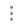

Вы можете добавить или импортировать записи в базу знаний, а также протестировать их взаимодействие с пользователем.
Для этого перейдите на карточку бота и нажмите на блок базы знаний.
Добавление записи вручную
Если база знаний пуста, нажмите кнопку + Добавить запись. Если база наполнена записями, нажмите и выберите Добавить запись.
Откроется окно добавления новой записи.
- Вопросы и фразы — укажите возможные формулировки запроса, разделяя их клавишей Enter;
- Ответ — укажите ответ, который получит пользователь. С помощью встроенного HTML-редактора вы можете выделить заголовки, настроить списки и т. д.;
- Уточняющие вопросы — выберите из выпадающего списка другие записи из базы знаний. Пользователь увидит их названия вместе с ответом на вопрос и сможет воспользоваться ими, чтобы получить больше информации по своему запросу. Уточняющими вопросами могут быть только те записи, которые ещё не связаны с другими записями.
Например, вы можете указать возможные приветственные фразы от пользователя и ответ на них. В качестве уточняющих вопросов выберите записи, в которых содержится информация по часто задаваемым вопросам, которые могут интересовать пользователя в первую очередь.
Сохраните запись. После этого пользователь, поздоровавшийся с ботом, увидит ответное приветствие, а также кнопки с предложеными вариантами запросов.
Обратите внимание, после добавления записей нужно нажать кнопку Сохранить* на верхней панели страницы базы знаний.
Импорт записей
Чтобы загрузить в базу знаний файл с возможными запросами пользователей и ответами на них, нажмите кнопку и выберите Импорт документа.
Откроется окно, в котором приведены поддерживаемые форматы загружаемых файлов с примерами.
Также в окне доступны две вкладки:
- Добавить источник — перетащите в поле готовый файл или выберите его в папке на компьютере. Также вы можете указать ссылку на файл, расположенный на сайте docs.google.com. После импорта на каждой записи будет стоять пометка с названием файла-источника, из которого была импортирована запись;
- Заменить источник — из выпадающего списка выберите загруженный ранее источник, который необходимо заменить. Вы можете импортировать новый файл-источник и таким образом быстро обновить записи в базе знаний.
Обратите внимание, после добавления всех записей нужно нажать кнопку Сохранить* на верхней панели страницы базы знаний.
Действия с записями
При поиске ответа на вопросы пользователей бот учитывает только включённые записи. Исключить запись из работы бота можно с помощью переключателя, который находится в правом углу блока записи.
Чтобы редактировать или удалить созданную вручную или импортируемую запись, нажмите на значок .
Диагностика записей
С помощью диагностики вы можете выявить похожие записи в базе знаний. Для этого нажмите кнопку Диагностика на верхней панели страницы.
В случае, если схожие записи были найдены, вы увидите соответствующее оповещение.
Такие записи необходимо отредактировать для корректной работы бота.
Поиск записей
Чтобы найти записи в базе знаний, введите запрос в строку поиска вверху страницы. Также для получения более точного результата вы можете воспользоваться фильтром. Для этого нажмите на значок в строке поиска.
- Источник — из выпадающего списка выберите импортированный документ, по записям которого нужно осуществить поиск;
- Уточняющие вопросы — в поле доступны две опции:
- Все — поиск будет осуществляться по всем записям вне зависимости от того, являются они уточняющими вопросами или нет;
- Без уточняющих — в результате отобразятся записи, не являющиеся уточняющими вопросами.
Семантический поиск
Для тестирования и настройки точности распознавания записей в базе знаний можно использовать Семантический поиск. Это инструмент, который ищет записи, учитывая не только введённые символы, но и смысл отдельных слов и фраз.
После ввода запроса вы увидите самую подходящую для него запись, а также записи, похожие по смыслу.
Если подходящая запись не нашлась, вы увидите список похожих фраз и рекомендации по улучшению распознавания записей.
Тестирование базы знаний
Проверить правильность работы добавленных записей вы можете в блоке Тестирование. Подробнее об этом читайте в статье «Тестирование бота».